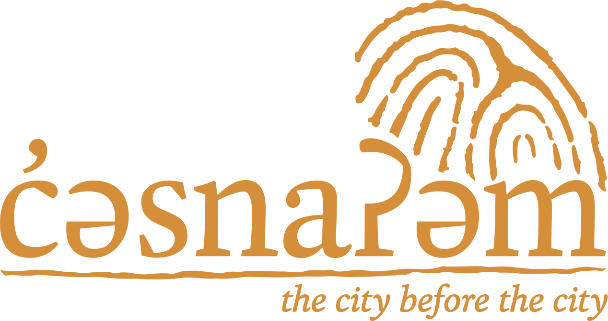

ʔa:: si:ʔém̓ tə siyéy̓eʔ ct, hay ce:p q̓ə tə ɬwələp k̓ʷəθ xʷʔəm̓i. ɬwələp yəxʷ ceʔ xʷəxʷəy̓əneʔ. xʷən̓iwən ce:p ʔə tə sʔa:nɬ šxʷam̓ət ct ʔə ƛ̓ c̓əsnaʔəm, xʷən̓iwən ƛ̓eʔ ʔə tə šxʷməθkʷəy̓əmaʔɬ təməxʷ, snəw̓eyəɬ, syəθəs ʔiʔ tə shən̓q̓əmin̓əm̓qən.
Our respected friends and relations, thank you to all of you for coming. You will honor us to become witnesses. Commit our ancestral village of c̓əsnaʔəm to your hearts and minds. Commit also to your hearts and minds the land, traditional teachings, history and language of the Musqueam people.
Musqueam First Nation, the Museum of Anthropology (MOA) at UBC, and the Museum of Vancouver (MOV) partner on a groundbreaking exploration of an ancient landscape and living culture c̓əsnaʔəm, the city before the city — a series of three distinct exhibitions, opening in the third week of January, 2015. The unified exhibits will connect visitors with c̓əsnaʔəm — one of the largest ancient village and burial sites upon which Vancouver was built — sharing its powerful 5,000-year history and continuing significance.
January 25, 2015
through
December 2015
Focusing on Musqueam identity and worldview,
this exhibition highlights oral history, language and Musqueam's recent
actions to protect c̓əsnaʔəm. It demonstrates
Musqueam's continuous connection to their territory, despite many
changes to the land.
Exhibition
January 23, 2015
through
January 28, 2016
At Musqueam, visitors witness the sophistication
of Musqueam culture — past and present. It makes connections
through a continuum of knowledge and expertise over time and features
oral histories and artefact recreation.
Exhibition
January 21, 2015
through
December 20, 2020
This multi-year exhibition draws multiple
connections between belongings from c̓əsnaʔəm,
Indigenous ways of knowing, colonialism, heritage politics, cultural
resilience, and contemporary Musqueam culture.
Exhibition
Recognition of Partners: SSHRC, MAP, University of Waterloo, City of Vancouver, BC Arts Council and Province of British Columbia